library(tidyverse)
library(GenomicRanges)
## NO NEED TO RUN THIS AGAIN IF ALREADY LOADED
library(org.Hs.eg.db)
options(timeout=600) ## This will increase the time for downloading large files
library(txdbmaker)
txdb.gff <- makeTxDbFromGFF(file = "data/Homo_sapiens.GRCh37.74.edited.gtf",format = "gtf", organism = "Homo sapiens")Genomic annotation and visualisation
Learning Objectives
- Annotate GRanges objects with gene features
- Compare and plot annotations of ChIP-seq peaks
- Run functional enrichment analyses on sets of genes
- Combine genome annotations in GRanges objects with genomic data in bigWig files
- Plot and visualise sequencing reads around genomic annotations
Bioconductor has many packages for annotating, analysing and visualising genomic data. In this section we will introduce some of these packages to give you a taste of the types of analysis you can perform. Here, we focus on ChIP-seq data but these methods can be applied to many types of genomic data.
Annotating GenomicRanges
Once you have imported data as a GRanges object, you will often want to annotate these with overlapping genes or other genomic features. For instance, if you have a set of ChIP-seq peaks, you may want to know how many of these peaks overlap with gene promoters, exons or intergenic regions.
There are several options for annotating GRanges objects with sets of features. Genomation and ChIPpeakAnno for instance all provide methods to do this. There are also packages like Homer and DeepTools available outside of R. Here we are going to use ChIPseeker to annotate sets of ChIP-seq peaks relative to gene annotations.
ChIP-seq data
We are going to use data from the ChIPSeeker tutorial which includes ChIP-seq peaks for CBX6 and CBX7 in human fibroblasts, 2 components of the polycomb repressive complex (GEO GSE40740).
In addition, there are also ChIP-seq peaks for human andronegen receptor (AR) in cells at 3 different concentrations of andronegen ARmo_0M, ARmo_1nM, ARmo_100nM (GEO GSE48308).
These datasets are all aligned to the human hg19 assembly. Let’s make sure you have the hg19 annotation and gene models loaded in the previous lesson:
Annotate peaks
Load the ChIPseeker library and the CBX6 peaks as a GRanges object. The readPeakFile() function is provided by ChIPseeker but you could also use readBed() from the genomation package.
library(ChIPseeker)
## Get the example file locations
peakFiles <- getSampleFiles()Inspect all of the sample files
peakFilesSelect files for further analysis
## Select CBX6 for further analysis
CBX6 <- readPeakFile(peakFiles[[4]])
## Inspect the GRanges object
CBX6GRanges object with 1331 ranges and 2 metadata columns:
seqnames ranges strand | V4 V5
<Rle> <IRanges> <Rle> | <character> <numeric>
[1] chr1 815093-817883 * | MACS_peak_1 295.76
[2] chr1 1243288-1244338 * | MACS_peak_2 63.19
[3] chr1 2979977-2981228 * | MACS_peak_3 100.16
[4] chr1 3566182-3567876 * | MACS_peak_4 558.89
[5] chr1 3816546-3818111 * | MACS_peak_5 57.57
... ... ... ... . ... ...
[1327] chrX 135244783-135245821 * | MACS_peak_1327 55.54
[1328] chrX 139171964-139173506 * | MACS_peak_1328 270.19
[1329] chrX 139583954-139586126 * | MACS_peak_1329 918.73
[1330] chrX 139592002-139593238 * | MACS_peak_1330 210.88
[1331] chrY 13845134-13845777 * | MACS_peak_1331 58.39
-------
seqinfo: 24 sequences from an unspecified genome; no seqlengthsThis is a GRanges object with ChIP-seq peaks. Each peak has a name and a score stored in the GRanges metadata columns. Let’s visualise the distribution of CBX6 peaks along the genome.
## Plot distribution of peaks and peak heights on Chromosomes
covplot(CBX6, weightCol="V5")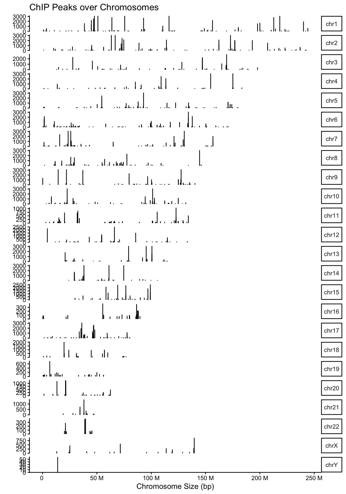
We will now use the txdb object we created earlier to annotate our peaks with gene features. The promoter regions are given as +/- 3Kb around the TSS of each gene.
## Annotate the peak regions with gene features. We can also set the level to "transcript"
peakAnno <- annotatePeak(CBX6,
tssRegion = c(-3000, 3000),
TxDb= txdb.gff,
annoDb = "org.Hs.eg.db",
level = "gene")>> preparing features information... 2026-04-20 22:04:46
>> identifying nearest features... 2026-04-20 22:04:46
>> calculating distance from peak to TSS... 2026-04-20 22:04:47
>> assigning genomic annotation... 2026-04-20 22:04:47
>> adding gene annotation... 2026-04-20 22:04:54 >> assigning chromosome lengths 2026-04-20 22:04:54
>> done... 2026-04-20 22:04:54 peakAnnoAnnotated peaks generated by ChIPseeker
1331/1331 peaks were annotated
Genomic Annotation Summary:
Feature Frequency
9 Promoter (<=1kb) 47.85875282
10 Promoter (1-2kb) 7.06235913
11 Promoter (2-3kb) 5.10894065
4 5' UTR 3.60631104
3 3' UTR 2.10368144
1 1st Exon 0.52592036
7 Other Exon 2.32907588
2 1st Intron 5.10894065
8 Other Intron 5.48459805
6 Downstream (<=300) 0.07513148
5 Distal Intergenic 20.73628850This output shows us the distribution of peaks with respect to gene features. The peakAnno object also contains a GRanges object where our peaks are annotated with overlapping features in the metadata.
## Let's look at our annotated GRanges object
as.GRanges(peakAnno)GRanges object with 1331 ranges and 13 metadata columns:
seqnames ranges strand | V4 V5
<Rle> <IRanges> <Rle> | <character> <numeric>
[1] chr1 815093-817883 * | MACS_peak_1 295.76
[2] chr1 1243288-1244338 * | MACS_peak_2 63.19
[3] chr1 2979977-2981228 * | MACS_peak_3 100.16
[4] chr1 3566182-3567876 * | MACS_peak_4 558.89
[5] chr1 3816546-3818111 * | MACS_peak_5 57.57
... ... ... ... . ... ...
[1327] chrX 135244783-135245821 * | MACS_peak_1327 55.54
[1328] chrX 139171964-139173506 * | MACS_peak_1328 270.19
[1329] chrX 139583954-139586126 * | MACS_peak_1329 918.73
[1330] chrX 139592002-139593238 * | MACS_peak_1330 210.88
[1331] chrY 13845134-13845777 * | MACS_peak_1331 58.39
annotation geneChr geneStart geneEnd geneLength
<character> <integer> <integer> <integer> <integer>
[1] Promoter (<=1kb) 1 818043 819983 1941
[2] Promoter (<=1kb) 1 1243947 1247057 3111
[3] Promoter (1-2kb) 1 2978523 2978959 437
[4] Promoter (1-2kb) 1 3569084 3652765 83682
[5] Promoter (<=1kb) 1 3805689 3816857 11169
... ... ... ... ... ...
[1327] Intron (ENST00000394.. 23 135229559 135293518 63960
[1328] Promoter (<=1kb) 23 139173902 139174720 819
[1329] Promoter (1-2kb) 23 139585152 139587225 2074
[1330] Distal Intergenic 23 139585152 139587225 2074
[1331] Distal Intergenic 24 13901758 13903233 1476
geneStrand geneId distanceToTSS ENTREZID SYMBOL
<integer> <character> <numeric> <character> <character>
[1] 1 ENSG00000269308 -160 <NA> <NA>
[2] 1 ENSG00000169972 0 126789 PUSL1
[3] 2 ENSG00000256761 -1018 <NA> <NA>
[4] 1 ENSG00000078900 -1208 7161 TP73
[5] 2 ENSG00000198912 0 339448 C1orf174
... ... ... ... ... ...
[1327] 1 ENSG00000022267 15224 2273 FHL1
[1328] 1 ENSG00000230707 -396 389895 HAPSTR2
[1329] 2 ENSG00000134595 1099 6658 SOX3
[1330] 2 ENSG00000134595 -4777 6658 SOX3
[1331] 2 ENSG00000234385 57456 650983 RCC2P1
GENENAME
<character>
[1] <NA>
[2] pseudouridine syntha..
[3] <NA>
[4] tumor protein p73
[5] chromosome 1 open re..
... ...
[1327] four and a half LIM ..
[1328] HUWE1 associated pro..
[1329] SRY-box transcriptio..
[1330] SRY-box transcriptio..
[1331] regulator of chromos..
-------
seqinfo: 24 sequences from an unspecified genome; no seqlengthsWe now have additional columns with annotations for each peak.
Visualise annotations
We can visualise the distribution of peaks relative to gene features by plotting the peakAnno object.
## Bar plot of peak distribution across gene features
plotAnnoBar(peakAnno)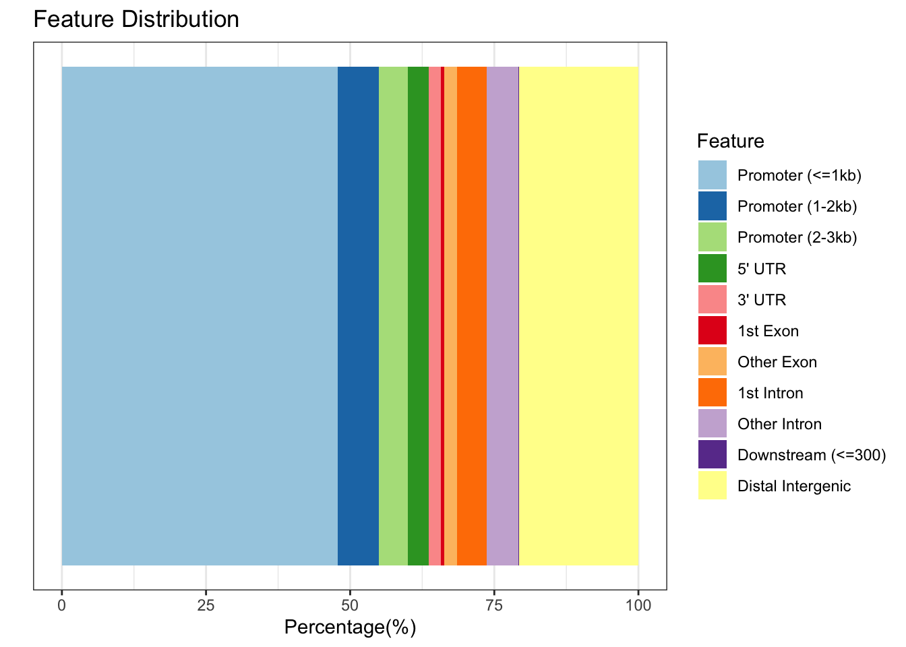
Here we can see that ~60% of our peaks can be found in or around promoter regions.
We can also annotate and plot multiple peaks at once. Let’s use all of the sample datasets within ChIPSeeker. To do this, we use the map() function from the tidyverse purrr package to loop through our peak files and run the annotatePeak() function. We will learn more about the map() function later.
## map all of the files to the annotatePeak function to create a list of annotated peaks
library(purrr)
peakAnnoList <- map(peakFiles, ~annotatePeak(.x,
TxDb=txdb.gff,
tssRegion=c(-3000,3000),
annoDb="org.Hs.eg.db",
level="gene")
)>> loading peak file... 2026-04-20 22:04:54
>> preparing features information... 2026-04-20 22:04:54
>> identifying nearest features... 2026-04-20 22:04:54
>> calculating distance from peak to TSS... 2026-04-20 22:04:55
>> assigning genomic annotation... 2026-04-20 22:04:55
>> adding gene annotation... 2026-04-20 22:04:55 >> assigning chromosome lengths 2026-04-20 22:04:56
>> done... 2026-04-20 22:04:56
>> loading peak file... 2026-04-20 22:04:56
>> preparing features information... 2026-04-20 22:04:56
>> identifying nearest features... 2026-04-20 22:04:56
>> calculating distance from peak to TSS... 2026-04-20 22:04:56
>> assigning genomic annotation... 2026-04-20 22:04:56
>> adding gene annotation... 2026-04-20 22:04:57 >> assigning chromosome lengths 2026-04-20 22:04:57
>> done... 2026-04-20 22:04:57
>> loading peak file... 2026-04-20 22:04:57
>> preparing features information... 2026-04-20 22:04:57
>> identifying nearest features... 2026-04-20 22:04:57
>> calculating distance from peak to TSS... 2026-04-20 22:04:57
>> assigning genomic annotation... 2026-04-20 22:04:57
>> adding gene annotation... 2026-04-20 22:04:58 >> assigning chromosome lengths 2026-04-20 22:04:58
>> done... 2026-04-20 22:04:58
>> loading peak file... 2026-04-20 22:04:58
>> preparing features information... 2026-04-20 22:04:58
>> identifying nearest features... 2026-04-20 22:04:58
>> calculating distance from peak to TSS... 2026-04-20 22:04:58
>> assigning genomic annotation... 2026-04-20 22:04:58
>> adding gene annotation... 2026-04-20 22:04:59 >> assigning chromosome lengths 2026-04-20 22:04:59
>> done... 2026-04-20 22:04:59
>> loading peak file... 2026-04-20 22:04:59
>> preparing features information... 2026-04-20 22:04:59
>> identifying nearest features... 2026-04-20 22:04:59
>> calculating distance from peak to TSS... 2026-04-20 22:04:59
>> assigning genomic annotation... 2026-04-20 22:04:59
>> adding gene annotation... 2026-04-20 22:05:00 >> assigning chromosome lengths 2026-04-20 22:05:00
>> done... 2026-04-20 22:05:00 We can plot the full list with one command.
## Plot all the sets of peaks together
plotAnnoBar(peakAnnoList)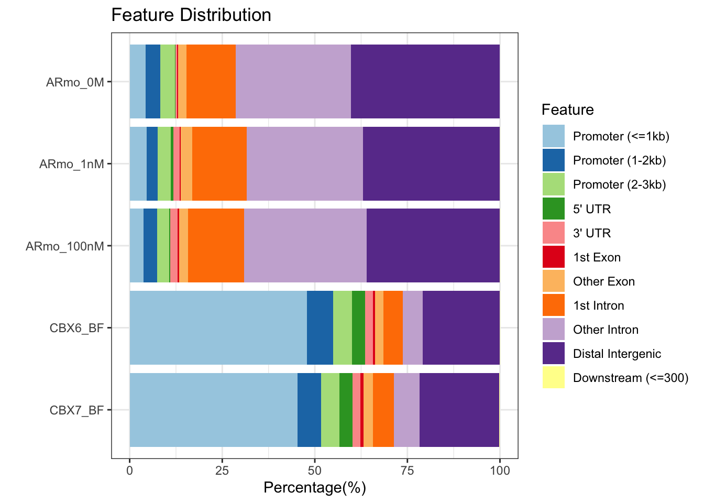
We can clearly see different distributions of peaks in relation to genomic features for the AR and CBX proteins.
Plot peak distributions around TSS
Let’s plot the positions of peaks for all samples relative to the TSS regions in our gene model. We first need to create a matrix of peaks around the TSS regions. This can take some time so we will use a pre-computed dataset.
## Set the promoter regions
promoter <- getPromoters(TxDb = txdb.gff, upstream = 3000, downstream = 3000)
## !!! The step below takes around 10 mins to complete, in order to speed up the tutorial the data is supplied below!!!##
## Create a matrix of peak positions for each of the samples. Be patient, this will take around 10 mins to run.
#tagMatrixList <- map(peakFiles, ~getTagMatrix(.x, windows = promoter))
## Load the pre-computed tagMatrixList
data("tagMatrixList")We can now plot out the matrix to see the average profile of peaks around promoter regions.
## Plot average profiles of peak distribution across promoter regions
plotAvgProf(tagMatrixList, xlim = c(-3000, 3000), facet="row",)>> plotting figure... 2026-04-20 22:05:00 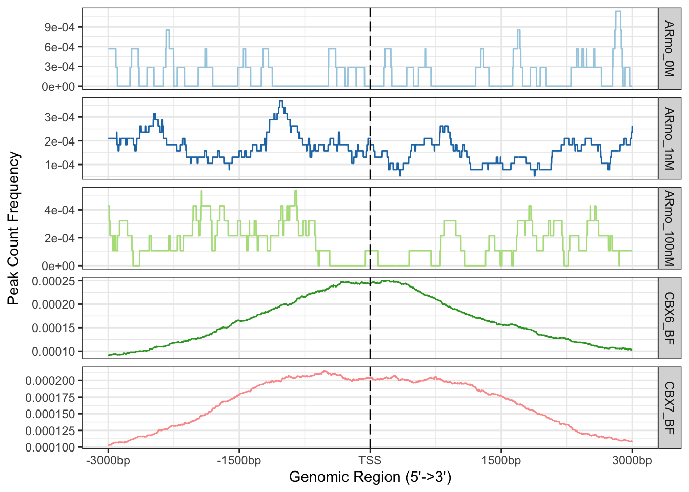
It is possible to add errors to these plots by adding conf and resample arguments. This will add confidence intervals to the plot by re-sampling the data and calculating confidence intervals from the re-sampled data. This can take a while to run so we have not included this in the tutorial but you can try it out if you have time.
## Plot average profiles including confidence intervals
#plotAvgProf(tagMatrixList, xlim = c(-3000, 3000), facet = "row", conf = 0.95, resample = 1000)We can also plot this as a heatmap.
## Plot heatmaps of peak distribution across promoter regions
tagHeatmap(tagMatrixList)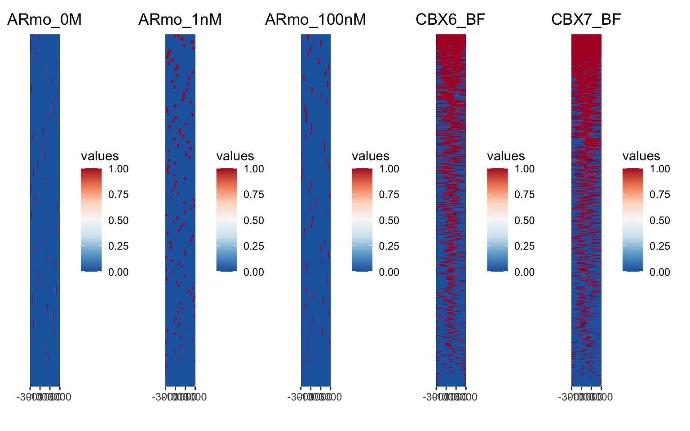
With both plots we can see a definite enrichment of ChIP-seq peaks around the TSS in both CBX6 and CBX7.
Further Learning
If you are working with ChIP-seq data then it is worth going through the ChIP-seeker tutorial as there are many other useful functions:
- Plotting average peak profile across gene bodies and other features
- Functional enrichment analysis
- Venn diagrams of peak set overlaps
Overlapping features
Genomation and ChIPseeker both have useful functions for looking at overlaps between GRanges objects.
Genomation can annotate one GRanges objet with another. For instance, we can annotate our CBX6 peaks with the promoter regions we defined earlier.
library(genomation)
par(mfrow=c(1,1)) ## reset plotting format as ChIPseeker may have altered this
CBX6.promoters <- annotateWithFeature(CBX6, promoter, feature.name ="Promoters")
CBX6.promotersPromoters other
60.03 39.97 [1] 1.64## Plot the annotation overlap as a pie chart
plotTargetAnnotation(CBX6.promoters, col=c("#0B7189", "#8FD694"), main = "CBX6")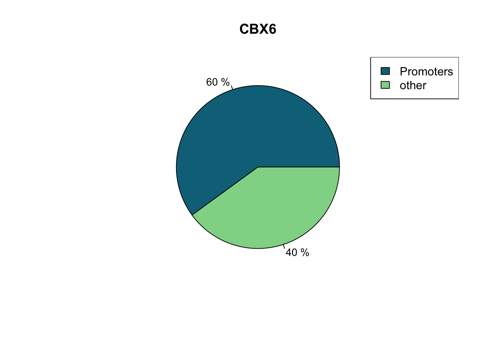
Let’s look at some different ChIP-seq peaks and see how they overlap with each other. We can use the annotateWithFeatures() function to annotate one set of peaks with multiple sets of features at once.
## Read in CBX7 and AR1 files as GRanges
CBX7 <- readPeakFile(peakFiles[[5]])
AR1 <- readPeakFile(peakFiles[[1]])
## Annotate with multiple features
CBX.overlap <- annotateWithFeatures(CBX6, GRangesList(CBX7 = CBX7, AR1 = AR1))
CBX.overlapCBX7 AR1
71.9 0.0 CBX7 AR1
51.17 0.00 Statistical testing of overlaps
It is useful to know to what extent peaks from different samples overlap and whether this overlap is statistically significant, as it may imply co-operative binding. ChIPseeker has a function enrichPeakOverlap() to calculate and test overlaps between peak sets.
The function generates a null distribution by randomly shuffling the positions of the query peaks throughout the genome and testing for overlaps with the other peaks, then repeating this many times. You should set the nShuffle argument to >=1000 for robust results.
epo <- enrichPeakOverlap(queryPeak = CBX6,
targetPeak = unlist(peakFiles[c(1:3,5)]),
TxDb = txdb.gff,
pAdjustMethod = "BH",
nShuffle = 1000,
verbose = FALSE,
chainFile = NULL)
epo qSample tSample qLen
ARmo_0M queryPeak GSM1174480_ARmo_0M_peaks.bed.gz 1331
ARmo_1nM queryPeak GSM1174481_ARmo_1nM_peaks.bed.gz 1331
ARmo_100nM queryPeak GSM1174482_ARmo_100nM_peaks.bed.gz 1331
CBX7_BF queryPeak GSM1295077_CBX7_BF_ChipSeq_mergedReps_peaks.bed.gz 1331
tLen N_OL pvalue p.adjust
ARmo_0M 812 0 1 1
ARmo_1nM 2296 4 1 1
ARmo_100nM 1359 2 1 1
CBX7_BF 1663 968 1 1Unfortunately, there seems to be a bug in some versions of ChIPseeker where it will return all p-values as 1.
An alternative package, regioneR has a comprehensive set of functions for overlap analysis.
The regioneR package performs association analysis of overlapping features based on permutation tests. The permutation test first calculates the number of overlaps between a genomic feature and a set of given regions. To test if this number is expected by chance it also calculates a distribution of feature overlaps from numerous sets of randomised regions.
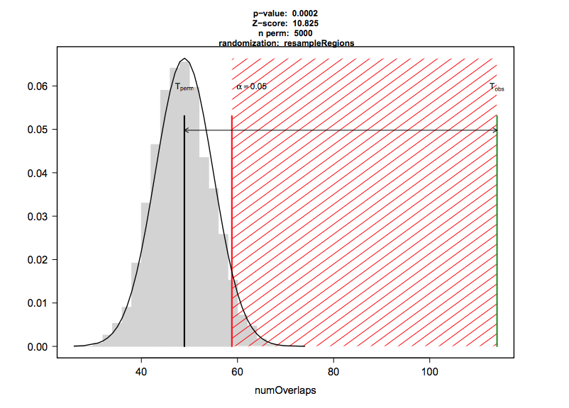
The regioneR permTest() function takes a while to run, so we have supplied the code below as an example but will not run this in the workshop. We can use regioneR to test the significance of overlaps between CBX6 peaks and promoter regions:
#library(regioneR)
## Test the significance of overlaps between CBX6 and gene promoter regions.
#pt <- permTest(A = CBX6,
# B = promoter,
# randomize.function = randomizeRegions,
# evaluate.function = numOverlaps,
# count.once = T,
# genome = "BSgenome.Hsapiens.UCSC.hg19.masked",
# ntimes=1000)
# pt
# plot(pt)When using regioneR you need to select evaluation and randomisation functions.
Here we have evaluated the number of overlaps between regions (numOverlaps()). You can also evaluate the distance between regions or the mean score if your GRanges are weighted (e.g. methylation scores).
For randomisation, we have used the randomizeRegions() function which selects random regions from the genome with the same length distribution as our CBX6 peaks to approximate the null distribution. We supply a repeat masked BSgenome so only mappable regions of the genome are selected.
The alternative is to use resampleRegions(). This assumes that your regions are part of a larger set e.g. differential binding sites. You can then approximate the null distribution by randomly sampling the same number from the full set of binding sites.
Further Learning
All of this is described in depth in the regioneR documentation.
Discussion
Can you think of other situations where we might want to look at overlaps of genomic regions?
- Overlap of ChIP-seq peaks of replicates to test reproducibility
- Overlap of ChIP-seq peaks from different proteins to test for co-localisation
- Overlap of differentially expressed genes with specific genomic features
- Chromatin marks, classes of repeats, CpG islands etc.
Functional gene enrichment
Because we have annotated CBX6 peaks with ChIPseeker we can ask if these genes are enriched for particular functional terms. We can use the clusterProfiler package to perform Gene Ontology (GO) enrichment analysis.
The GO database is a hierarchical structured database of gene functions. It has three main categories: Biological Process, Molecular Function and Cellular Component. Each category contains terms which are associated with sets of genes. For instance, the term “DNA binding” in the Molecular Function category is associated with a set of genes that have been experimentally shown to bind DNA.
library(clusterProfiler)
## Get the Entrez Gene IDs for genes with a CBX6 binding site.
## na.omit will remove all of the NA entries
CBX6.gene <- na.omit(peakAnno@anno$ENTREZID)
head(CBX6.gene)[1] "126789" "7161" "339448" "390992" "54897" "1889" ##Run the GO enrichment analysis
ego <- enrichGO(gene = CBX6.gene,
OrgDb = org.Hs.eg.db,
ont = "ALL", ## We could select all or just one of the categories (BP, MF or CC)
pAdjustMethod = "BH", ## This is the statistical method used to adjust p-values for multiple testing. BH is the Benjamini-Hochberg method which controls the false discovery rate. We will look at this in the statistics course
qvalueCutoff = 0.05,
readable = TRUE)Let’s take a look at the top enriched terms. The “p.adjust” column gives the adjusted p-value for each term, the “geneID” column gives the genes associated with each term and the “Count” column gives the number of genes associated with each term.
## Inspect the top 20 enriched terms
head(ego) ONTOLOGY ID Description GeneRatio
GO:0045165 BP GO:0045165 cell fate commitment 66/617
GO:0007389 BP GO:0007389 pattern specification process 73/617
GO:0003002 BP GO:0003002 regionalization 66/617
GO:0048568 BP GO:0048568 embryonic organ development 67/617
GO:0048663 BP GO:0048663 neuron fate commitment 27/617
GO:0048562 BP GO:0048562 embryonic organ morphogenesis 48/617
BgRatio RichFactor FoldEnrichment zScore pvalue
GO:0045165 297/18986 0.2222222 6.838106 18.58499 2.506285e-36
GO:0007389 476/18986 0.1533613 4.719155 15.06086 4.987801e-29
GO:0003002 430/18986 0.1534884 4.723064 14.31191 2.587170e-26
GO:0048568 458/18986 0.1462882 4.501504 13.90203 1.819548e-25
GO:0048663 75/18986 0.3600000 11.077731 16.02660 1.606138e-21
GO:0048562 300/18986 0.1600000 4.923436 12.55377 3.763094e-20
p.adjust qvalue
GO:0045165 1.123066e-32 9.296997e-33
GO:0007389 1.117517e-25 9.251058e-26
GO:0003002 3.864369e-23 3.199013e-23
GO:0048568 2.038348e-22 1.687391e-22
GO:0048663 1.439421e-18 1.191586e-18
GO:0048562 2.810404e-17 2.326516e-17
geneID
GO:0045165 TAL1/DMRTA2/NFIA/JAK1/BARHL2/GATA3/NKX2-3/PAX2/LBX1/DBX1/PAX6/WT1/HOXC10/FOXN4/TBX5/POU4F1/FOXG1/FOXA1/BMP4/SIX1/BCL11B/ISL2/NR2F2/FOXC2/TBX2/TBX4/SOX9/SOCS3/GATA6/ONECUT2/TCF3/EPAS1/CYP26B1/FOXI3/TBR1/DLX1/DLX2/HOXD10/ERBB4/NKX2-2/GATA5/OLIG2/EOMES/MITF/GATA2/SOX2/SFRP2/IL6ST/NEUROG1/TLX3/NKX2-5/IRF4/POU3F2/NR2E1/HEY2/OLIG3/TBX20/WNT16/GATA4/EBF2/SOX17/BHLHE22/PRDM14/ESRP1/GAS1/ARX
GO:0007389 HES3/RNF220/DMRTA2/ALX3/BMI1/HHEX/PAX2/LBX1/DBX1/PAX6/WT1/PRICKLE1/HOXC13/HOXC11/HOXC10/HOXC6/WIF1/FOXN4/TBX5/CDX2/FOXG1/FOXA1/BMP4/OTX2/SIX1/FOXB1/NR2F2/FOXC2/TBX2/RAX/MEGF8/OTX1/CYP26B1/EMX1/NOTO/PAX8/EPB41L5/TBR1/DLX1/DLX2/HOXD13/HOXD11/HOXD10/HOXD9/ERBB4/GBX2/NKX2-2/GATA5/SIM2/EOMES/ZIC1/TP63/NKX3-2/LEF1/SPRY1/SFRP2/NEUROG1/NKX2-5/MSX2/FOXC1/HEY2/UNCX/MEOX2/SP8/TBX20/FEZF1/SMARCD3/GATA4/SOX17/HEY1/BARX1/LMX1B/NRARP
GO:0003002 HES3/RNF220/DMRTA2/BMI1/HHEX/PAX2/LBX1/DBX1/PAX6/WT1/PRICKLE1/HOXC13/HOXC11/HOXC10/HOXC6/WIF1/FOXN4/CDX2/FOXG1/FOXA1/BMP4/OTX2/SIX1/FOXB1/NR2F2/FOXC2/TBX2/MEGF8/OTX1/CYP26B1/EMX1/NOTO/PAX8/EPB41L5/TBR1/DLX1/DLX2/HOXD13/HOXD11/HOXD10/HOXD9/GBX2/NKX2-2/GATA5/EOMES/TP63/NKX3-2/LEF1/SPRY1/SFRP2/NEUROG1/NKX2-5/MSX2/FOXC1/HEY2/MEOX2/SP8/TBX20/FEZF1/SMARCD3/GATA4/SOX17/HEY1/BARX1/LMX1B/NRARP
GO:0048568 ECE1/TAL1/ALX3/EFNA1/TGFB2/GATA3/BMI1/PAX2/LBX1/HMX3/HMX2/PHLDA2/PAX6/PRICKLE1/COL2A1/HOXC11/ALX1/FOXN4/FGF9/CDX2/FOXG1/BMP4/SIX1/NR2F2/FOXC2/NTN1/TBX2/TBX4/SOX9/SOCS3/EIF4A3/MEGF8/EPAS1/EFEMP1/OTX1/NOTO/PAX8/DLX2/HOXD11/HOXD10/HOXD9/GBX2/EOMES/GATA2/ZIC1/NKX3-2/LEF1/NEUROG1/NKX2-5/FOXC1/TUBB2B/HEY2/TCF21/TBX20/DLX6/WNT16/GATA4/NKX2-6/FZD3/SOX17/CHD7/HEY1/STK3/SCRIB/PAX5/FOXE1/CITED1
GO:0048663 DMRTA2/NFIA/LBX1/DBX1/PAX6/HOXC10/FOXN4/POU4F1/FOXG1/FOXA1/BMP4/SIX1/BCL11B/ISL2/SOX9/TBR1/DLX1/DLX2/HOXD10/NKX2-2/OLIG2/GATA2/TLX3/POU3F2/OLIG3/BHLHE22/ESRP1
GO:0048562 ALX3/EFNA1/GATA3/BMI1/PAX2/LBX1/HMX3/HMX2/PAX6/COL2A1/HOXC11/ALX1/FOXN4/FGF9/FOXG1/BMP4/SIX1/FOXC2/NTN1/TBX2/SOX9/EIF4A3/MEGF8/EFEMP1/OTX1/NOTO/PAX8/DLX2/HOXD11/HOXD10/HOXD9/GBX2/GATA2/ZIC1/NKX3-2/NEUROG1/NKX2-5/TCF21/TBX20/DLX6/WNT16/GATA4/FZD3/SOX17/CHD7/SCRIB/PAX5/FOXE1
Count
GO:0045165 66
GO:0007389 73
GO:0003002 66
GO:0048568 67
GO:0048663 27
GO:0048562 48## Plot the top 20 enriched terms
barplot(ego, showCategory=20, colorBy = "p.adjust")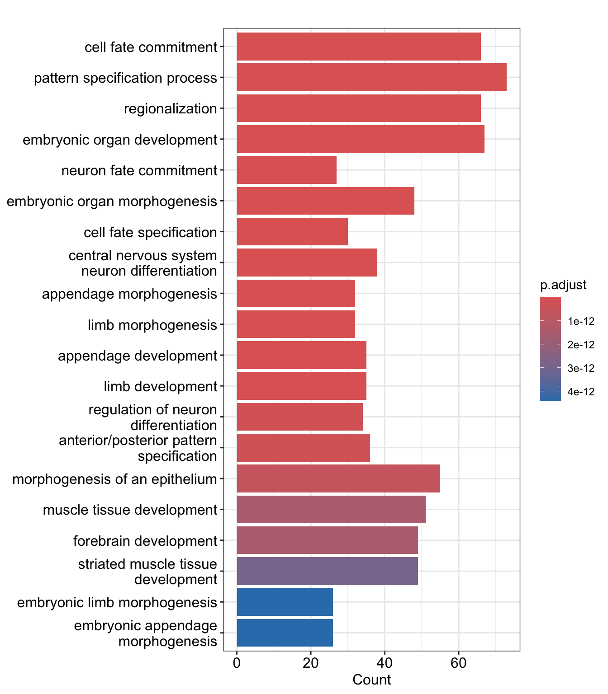
We can also plot a network of the top enriched terms and their associated genes. We will just choose the top 5.
## Plot a network of the top 8 enriched terms and their associated genes
cnetplot(ego, showCategory = 5)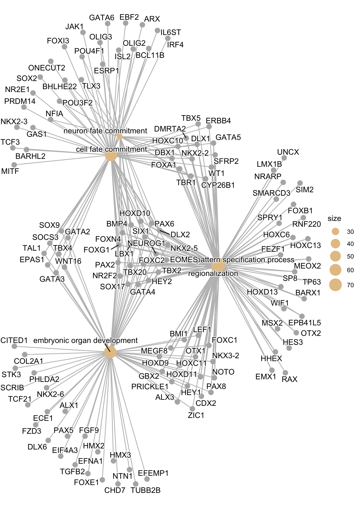
Further Learning
clusterProfiler also provides methods to query pathway databases such as KEGG. You can find out more in the documentation.
The gprofiler2 package is a wrapper for the online tool g:Profiler which looks at many different databases at once including GO, KEGG and transcription factor motifs. g:Profiler performs functional enrichment analysis of gene lists and will understand and convert Ensembl identifiers directly.
library(gprofiler2)
## Get a table of enriched terms with the gost function
gp <- gost(query = peakAnno@anno$geneId,
organism = "hsapiens",
ordered_query = FALSE,
multi_query = FALSE,
significant = TRUE,
exclude_iea = TRUE,
user_threshold = 0.05,
correction_method = "g_SCS",
domain_scope = "annotated",
custom_bg = NULL)Inspect the output. The “term_name” column is the enriched term and the “source” tells us which database it belongs to.
## Inspect the output
head(gp$result) query significant p_value term_size query_size intersection_size
1 query_1 TRUE 1.042338e-44 2298 575 219
2 query_1 TRUE 4.932138e-43 2427 575 223
3 query_1 TRUE 2.199398e-37 2990 575 241
4 query_1 TRUE 4.812772e-37 3258 575 253
5 query_1 TRUE 6.298093e-37 3008 575 241
6 query_1 TRUE 3.024614e-36 3141 575 246
precision recall term_id source
1 0.3808696 0.09530026 GO:0006357 GO:BP
2 0.3878261 0.09188298 GO:0006366 GO:BP
3 0.4191304 0.08060201 GO:0006355 GO:BP
4 0.4400000 0.07765500 GO:0051252 GO:BP
5 0.4191304 0.08011968 GO:2001141 GO:BP
6 0.4278261 0.07831901 GO:0006351 GO:BP
term_name effective_domain_size
1 regulation of transcription by RNA polymerase II 16268
2 transcription by RNA polymerase II 16268
3 regulation of DNA-templated transcription 16268
4 regulation of RNA metabolic process 16268
5 regulation of RNA biosynthetic process 16268
6 DNA-templated transcription 16268
source_order parents
1 2126 GO:00063....
2 2133 GO:0006351
3 2124 GO:00063....
4 13417 GO:00160....
5 25908 GO:00105....
6 2120 GO:00104....There is an interactive plot function built into gprofiler2 to visualise enriched terms.
## Plot gprofiler output
gostplot(gp, capped = TRUE, interactive = TRUE)Plot sequencing read profiles across genomic regions with soGGi
A common task in sequencing analysis is to plot profiles of particular signals across regions of interest. For instance ChIP-seq reads across the TSS regions of genes. You’ve probably guessed by now but there are many different ways to do this in R! Here we will introduce soGGi which is one of the more intuitive packages.
Data
First, make sure you have hg19 gene data imported from a BED file in the previous lesson.
hg19.genes <- readGeneric("data/Ensembl.GRCh37.74.edited.genes.bed",
chr = 1,
start = 2,
end = 3,
strand = 6,
meta.cols = list(name = 4,
symbol = 5,
biotype = 7))
hg19.pc.genes <- subset(hg19.genes, hg19.genes$biotype == "protein_coding")Next, we need to select the data to plot, these are our tracks. We are going to plot ChIP-seq read profiles for two histone modifications, H3K4me3 and H3K27me3. H3K4me3 is a mark of active promoters and H3K27me3 is a mark of repressed chromatin.
These data are stored in bigWig files and represent coverage profiles of aligned reads across a genome. They have four columns:
- Chromosome
- Start_position
- End_position
- Score
In this case, the score represents sequencing read coverage at each position. Enriched read coverage across a region of interest (e.g. TSS) indicates the presence of a particular chromatin mark.
## This is the data we intend to plot. We can supply the file paths of bigWig files directly to soGGi without importing the data to R.
## H3K4me3 ChIP-seq read profiles
H3K4me3.chip <- "data/H3K4me3.bw"
## H3K27me3 ChIP-seq read profiles
H3K27me3.chip <- "data/H3K27me3.bw"Average profile plots
Load the soGGi library and run the regionPlot() function for each track.
The regionPlot() function creates a matrix of binned scores across genomic regions. The default is to bin each region into 100 bins and calculate the average coverage per base. This gives us a matrix where rows are regions and columns are bins. The function will stranded features by reversing bins for features on the negative strand.
The regionPlot() function works with BAM files and bigwig files. Here, we supply a bigWig file and our hg19 protein coding genes.
library(soGGi)
rp <- regionPlot(bamFile = H3K4me3.chip,
testRanges = hg19.pc.genes,
format = "bigwig",
style = "percentOfRegion")
rp2 <- regionPlot(bamFile = H3K27me3.chip,
testRanges = hg19.pc.genes,
format = "bigwig",
style = "percentOfRegion")Take a look at the rp object. This is a special class of object called ChIPprofile which contains the GRanges, scores and metadata.
## R object with multiple 'slots'
rpclass: ChIPprofile
dim: 20306 300
metadata(2): names AlignedReadsInBam
assays(1): ''
rownames(20306): giID1 giID10 ... giID9998 giID9999
rowData names(4): name symbol biotype giID
colnames(300): Start-1 Start-2 ... End+99 End+100
colData names(0):## GRanges object of regions stored here
rp@rowRangesGRanges object with 20306 ranges and 4 metadata columns:
seqnames ranges strand | name symbol
<Rle> <IRanges> <Rle> | <character> <character>
giID1 chr15 20737094-20747114 - | ENSG00000215405 GOLGA6L6
giID10 chr15 22736246-22746002 + | ENSG00000197414 GOLGA6L1
giID100 chr15 92396925-92715665 + | ENSG00000176463 SLCO3A1
giID1000 chr18 33709407-33757909 + | ENSG00000134759 ELP2
giID10000 chr12 121078355-121105127 + | ENSG00000157782 CABP1
... ... ... ... . ... ...
giID9995 chr12 58003963-58013162 + | ENSG00000240771 ARHGEF25
giID9996 chr12 121016567-121019201 - | ENSG00000167272 POP5
giID9997 chr12 123258874-123312075 + | ENSG00000130783 CCDC62
giID9998 chr12 133707161-133736051 + | ENSG00000256223 ZNF10
giID9999 chr12 10851683-10875911 - | ENSG00000060138 YBX3
biotype giID
<character> <character>
giID1 protein_coding giID1
giID10 protein_coding giID10
giID100 protein_coding giID100
giID1000 protein_coding giID1000
giID10000 protein_coding giID10000
... ... ...
giID9995 protein_coding giID9995
giID9996 protein_coding giID9996
giID9997 protein_coding giID9997
giID9998 protein_coding giID9998
giID9999 protein_coding giID9999
-------
seqinfo: 25 sequences from an unspecified genome; no seqlengths## Matrix of scores across regions stored here
rp@assays@dataList of length 1By calculating the average score across all regions for each bin, we can plot an average profile plot.
## Concatenate the chipProfile objects into a single object
rpc <- c(rp, rp2)
## Plot the chipProfiles
plotRegion(rpc, colourBy = "Sample")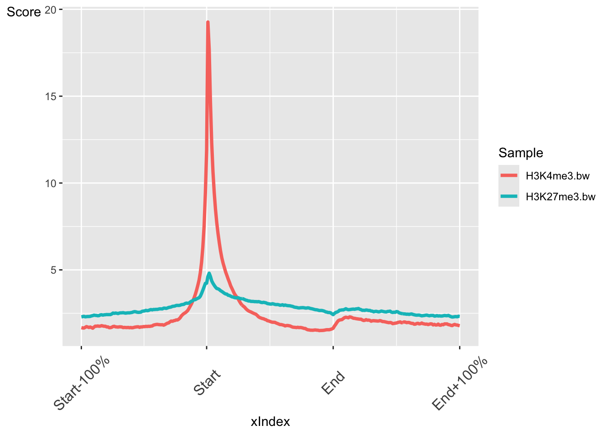
The output is a ggplot object. This means we can customise the output further with ggplot functions. For instance we can change the theme, labels and colours.
## Plot average profiles
plotRegion(rpc,colourBy = "Sample") +
theme_bw() +
labs(x = "Position relative to Gene", y = "Average coverage") +
scale_colour_manual(values = c("#3D405B", "#E07A5F"))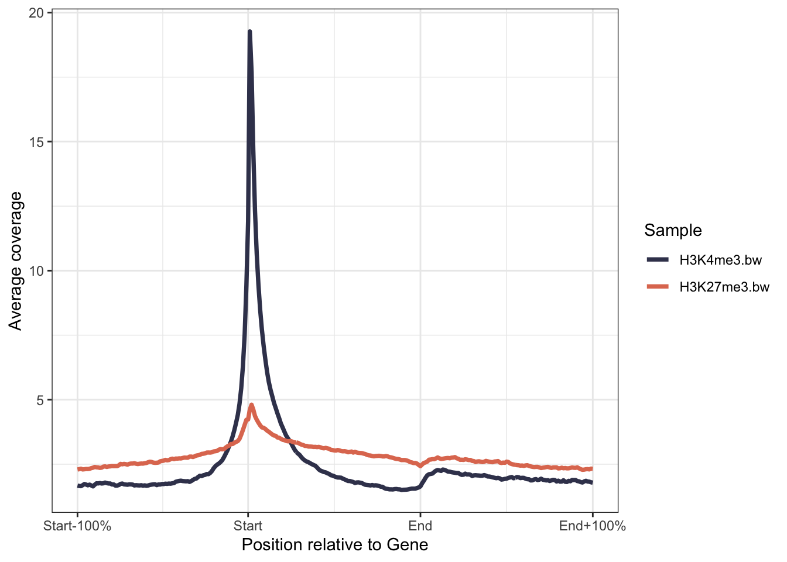
Further Learning
The soGGi package has many more customisation options for plotting average profiles. Take a look through the tutorial to see how you can adjust the regions to plot, the flank sizes, number of windows and smoothing options.
Heatmaps with profileplyr
The profileplyr package has many functions for importing, manipulating and visualising score matrices like the ones we created in soGGi. We can convert our ChIPprofile object to a profileplyr object and then use the generateEnrichedHeatmap() function to plot heatmaps of our ChIP-seq read profiles across the TSS regions of genes.
library(profileplyr)
## convert chipProfile object to profileplyr object
pp <- as_profileplyr(rpc)
## pipe profileplyr object to enrichedHeatmap
pp |> generateEnrichedHeatmap()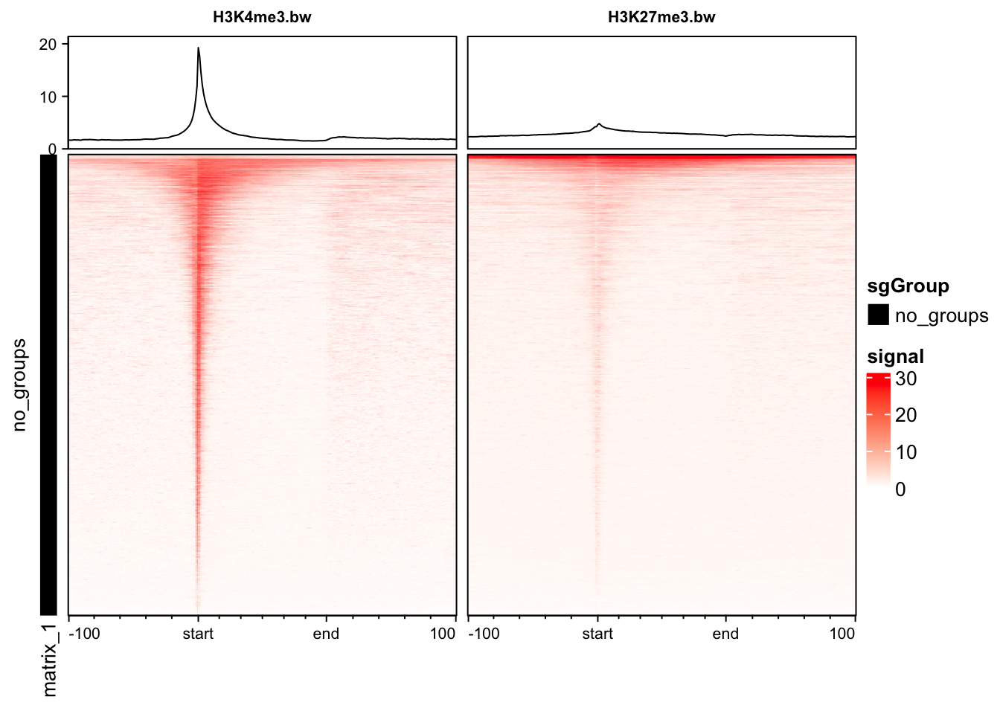
Further Learning
The profileplyr package leverages many Bioconductor packages to make it easy to manipulate and visualise profile data. It also works with packages outside of R like deepTools.
Grouping genes in heatmaps
We can put genes into different groups to plot them separately.
Let’s plot our histone modification data based on high and low expression of genes from RNA-seq data.
## Read in gene expression values calculated from RNA-seq data
exp <- read.table("http://bifx-core3.bio.ed.ac.uk/Shaun/Shaun/training/ROI_workshop/data/rna-seq_expression.tab",header=T,sep="\t")
head(exp) geneID Expression.tpm
1 ENSG00000000003 80.821525000
2 ENSG00000000005 0.123050850
3 ENSG00000000419 75.958950000
4 ENSG00000000457 7.734730000
5 ENSG00000000460 6.045562500
6 ENSG00000000938 0.007198725This table contains gene IDs and their expression values in TPM (transcripts per million). We will use the expression values to group genes into high and low expression groups and then plot the ChIP-seq read profiles for these groups separately.
## Remove genes with no expression: != means not equal to in R.
exp <- exp |> filter(!Expression.tpm == 0)
## Order by expression and take the top 2000 gene IDs
high <- exp |> arrange(desc(Expression.tpm)) |> slice(1:2000) |> pull(geneID)
low <- exp |> arrange(Expression.tpm) |> slice(1:2000) |> pull(geneID)
## Create a list of high and low expressed gene names
exp_list = list(high = high, low = low)We can now use the groupBy function in profileplyr to group these genes together in plots. Grouping can be performed with gene IDs, as we have done here, but also by overlapping ranges or clustering. See the profileplyr manual for more examples.
## By default, profileplyr expects our ranges to have a column called SYMBOL. This doesn't exist in our data so we are going to copy from the gene names column. This is the quickest way to do this in this tutorial
pp@rowRanges$SYMBOL = pp@rowRanges$names
## group by the genes in out expression list
pp |> groupBy(group = exp_list) |> generateEnrichedHeatmap()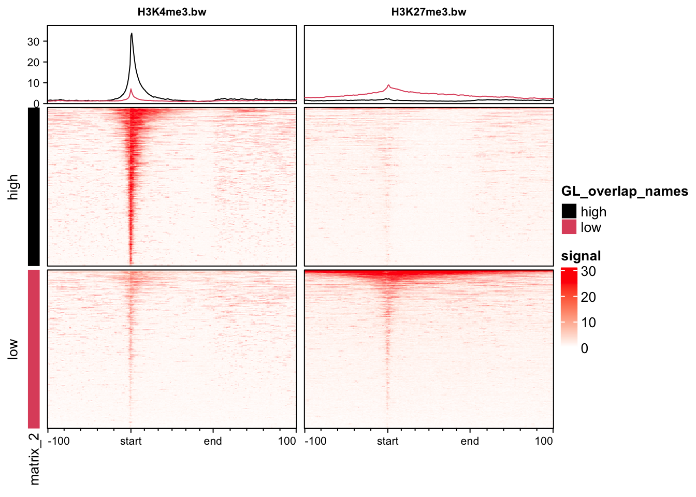
We can see that the H3K4me3 mark is enriched around the TSS of highly expressed genes and depleted around lowly expressed genes, which is what we would expect. The opposite is true for H3K27me3 which is a mark of repressed chromatin.
We can also use profileplyr functions to create average profile plots similar to the ones created with soGGi.
pp |> groupBy(group = exp_list) |> generateProfilePlot() +
labs(x = "Position relative to Gene", y = "Average coverage", colour = "Expression level") +
scale_colour_manual(values = c(high = "#E63946",low = "#1D3557"))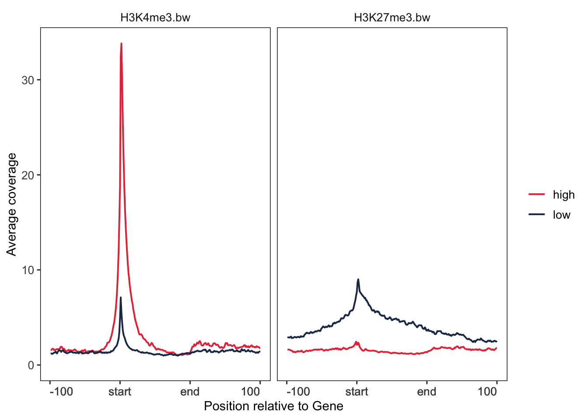
Other Bioconductor packages
In the remaining time, have a look at some of the other Bioconductor packages available and see if you can follow their tutorials. Here are a few ideas:
- Genome browser plotting and visualisation
- Average profile and heatmap plots
- Sequence alignment logos
- HiC data analysis
- RNA-seq differential expression
- Methylation analysis
Key points
Bioconductor has a large library of packages for analysing and visualising genomic datasets.